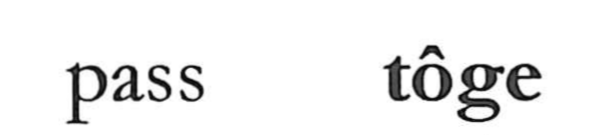

峠

Kun: toge | On:
mountain pass ・ pass ・ turning point
Explanation
A Japanese-made character, 峠 depicts the crucial saddle of a mountain path—the point where climbing gives way to descent. Its form combines 山 with the signs for “up” and “down,” visually marking that moment of transition. Such passes were revered as dwelling places of the gods: travelers worshipped the road deities (dosoji n) there and made offerings (tamuke). The word toge itself is understood as a shifted pronunciation of tamuke. From this sense comes the expression toge o kosu, meaning that the peak of vigor has passed and decline has begun. The character 裃 (kamishimo) is another kokuji built on the same structural idea.